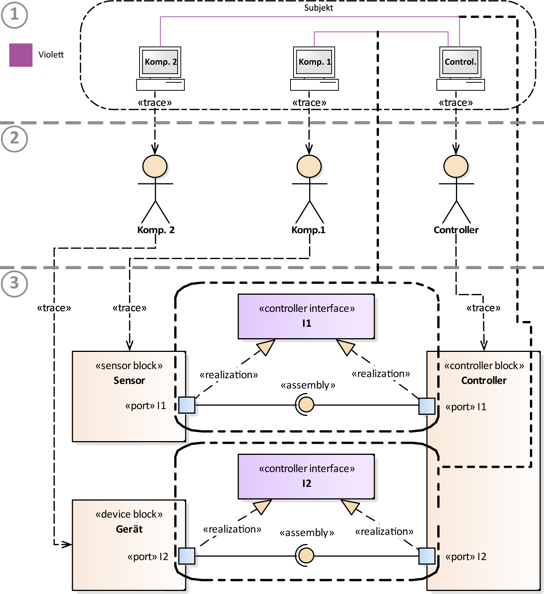
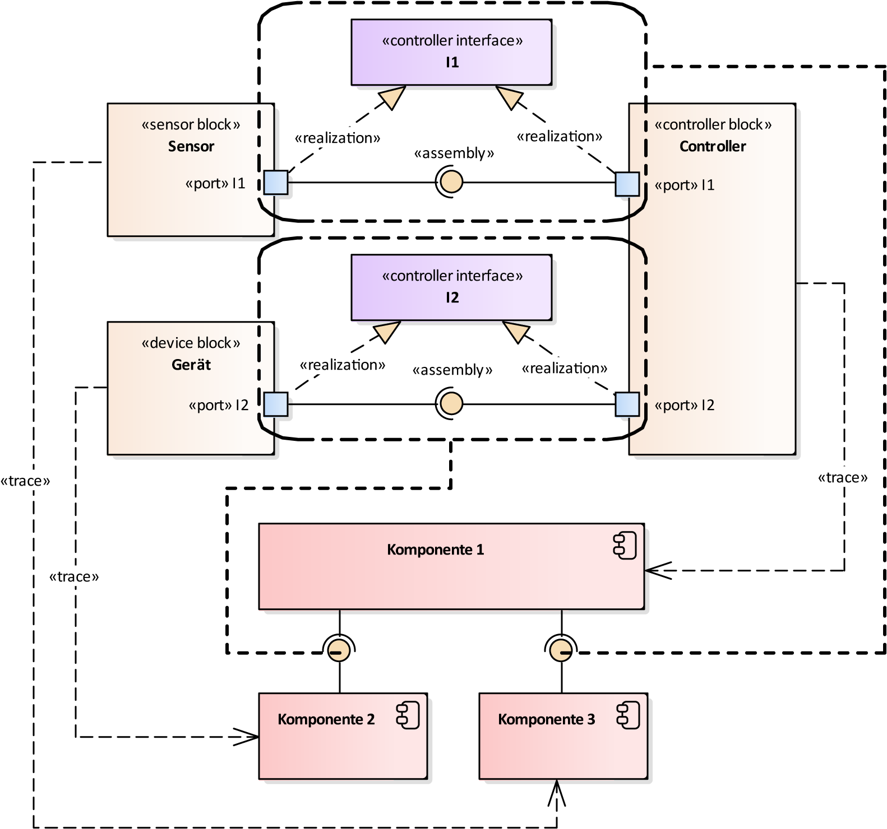

PIM-Layer
1. Erstellung des SIDP-Diagramms
Abbildung 1 zeigt, wie auf Grundlage der Regeln für die Modellierung von Prozessen mittels BPMN 2.0 und denen von UC-Diagrammen die Transformation auf ein SIDP-Diagramm zu erfolgen hat. Abbildung 1 ist in drei Bereiche unterteilt. Der erste stellt die Systembestandteile innerhalb des Prozesses mittels BPMN 2.0 dar. Der zweite veranschaulicht die Aktoren des UC-Diagramms. Ausgehend vom dritten Bereich ist der Einsatz von den zuvor stereotypisierten Elementen ersichtlich.

Abbildung 1: CIM-PIM Transformation auf SIDP-Diagramm.
Akteure innerhalb einer Composite-Structure, die das Vorhandensein eines Gerätes erkenntlich machen, sind als «device block» zu überführen. Jene Komponenten, die Sensoren verkörpern, sind als «sensor block» zu visualisieren. Zentrale Systembestandteile innerhalb eines "SIDP-Diagramms" sind als «controller block» (Bereich 3, rechts) darzustellen. Die überführung der Akteuere erofolgt Automatisch durch die Funkiton "SIDP-Bestandteile Generieren". Die Verbindungen zwischen einem Akteuren und SDIP-Systembestandteilen sind durch Trace-Verbindungen zu gewährleisten und erfolgen manuell.
Sowohl zentrale Systembestandteile als auch Bestandteile, die Sensoren oder Geräte zum Ausdruck bringen, müssen eine Verbindung zu einer Schnittstellen in Form eines «controller interface» aufweisen. Die Konnektivität wird durch die stereotypisierte Assoziationsart «realization» als strichlierte Linie mit einer geschlossenen, leeren Pfeilspitze gekennzeichnet. Der Ausgangspunkt einer solchen Assoziation ist durch den Stereotyp «port» bereitzustellen, welcher denselben Namen wie die Schnittstelle aufweisen muss. Die überführung erfolgt ausgehend von den Assoziationen zwischen den Systembestandteilen aus (Bereich 1) und ist in durch einen fett strichlierten Rahmen (Bereich 3, Mitte) gekennzeichnet. Die überführung erfolgt manuell.
2. Erstellung des UML-Komponentendiagramms
Mit Hilfe des SIDP-Diagramms kann eine abstrakte Darstellung der physikalischen Systembestandteile ermgölicht werden. Um nun die Konnektivität zwischen den pyhsikalischen und softwarebezogenen Bestandteilen zu ermöglichen, kommen UML-Komponentendiagramme zum Einsatz. Folgende Abbildung zeigt die schematische überführung eines SIDP-Diagramms auf ein UML-Komponentendiagramm.

Abbildung 2: PIM-PIM-Transformation eines SIDP-Diagramms auf ein UML-Komponentendiagramm.
Jeder im UML-Profil abgeleitete Stereotyp, der einen Controller, ein Gerät oder einen Sensor repräsentiert, muss auf mindestens eine Komponente im UML-Komponentendiagramm überführt werden. Diese wird durch die bereitgestellte Funktion "UML-Komponenten Generieren" ermöglicht.
Zwischen den Elementen mit den Stereotypen «sensor block» beziehungsweise «device block» und «controller block» realisierte stereotypisierte Schnittstellen, Ports, Realization- und Assembly-Assoziationen sind als UML-Assembly-Assoziation im UML-Komponentendiagramm darzustellen. Die Elemente, die von die überführung betroffen sind, sind in Abbildung 3.10 durch einen fett strichlierten Rahmen ersichtlich. Die Assembly-Assoziation sind manuell zu setzten.